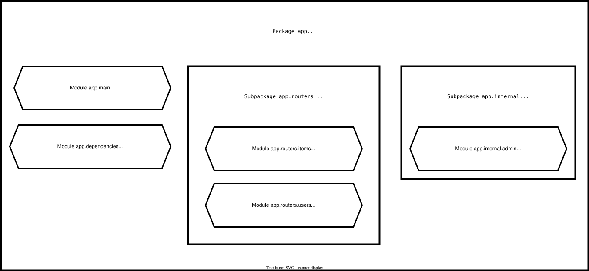

Большие приложения, в которых много файлов
При построении приложения или веб-API нам редко удается поместить все в один файл.
FastAPI предоставляет удобный инструментарий, который позволяет нам структурировать приложение, сохраняя при этом всю необходимую гибкость.
Примечание
Если вы раньше использовали Flask, то это аналог шаблонов Flask (Flask's Blueprints).
Пример структуры приложения
Давайте предположим, что наше приложение имеет следующую структуру:
.
├── app
│ ├── __init__.py
│ ├── main.py
│ ├── dependencies.py
│ └── routers
│ │ ├── __init__.py
│ │ ├── items.py
│ │ └── users.py
│ └── internal
│ ├── __init__.py
│ └── admin.pyПодсказка
Обратите внимание, что в каждом каталоге и подкаталоге имеется файл __init__.py
Это как раз то, что позволяет импортировать код из одного файла в другой.
Например, в файле app/main.py может быть следующая строка:
from app.routers import items-
Все помешается в каталоге
app. В нем также находится пустой файлapp/__init__.py. Таким образом,appявляется «Python-пакетом» (коллекцией модулей Python). -
Он содержит файл
app/main.py. Данный файл является частью пакета (т.е. находится внутри каталога, содержащего файл__init__.py), и, соответственно, он является модулем пакета:app.main. -
Он также содержит файл
app/dependencies.py, который также, как иapp/main.py, является модулем:app.dependencies. -
Здесь также находится подкаталог
app/routers/, содержащий__init__.py. Он является суб-пакетом:app.routers. -
Файл
app/routers/items.pyнаходится внутри пакетаapp/routers/. Таким образом, он является суб-модулем:app.routers.items. -
Точно также
app/routers/users.pyявляется еще одним суб-модулем:app.routers.users. -
Подкаталог
app/internal/, содержащий файл__init__.py, является еще одним суб-пакетом:app.internal. -
А файл
app/internal/admin.pyявляется еще одним суб-модулем:app.internal.admin.

Та же самая структура приложения, но с комментариями:
.
├── app # "app" пакет
│ ├── __init__.py # этот файл превращает "app" в "Python-пакет"
│ ├── main.py # модуль "main", напр.: import app.main
│ ├── dependencies.py # модуль "dependencies", напр.: import app.dependencies
│ └── routers # суб-пакет "routers"
│ │ ├── __init__.py # превращает "routers" в суб-пакет
│ │ ├── items.py # суб-модуль "items", напр.: import app.routers.items
│ │ └── users.py # суб-модуль "users", напр.: import app.routers.users
│ └── internal # суб-пакет "internal"
│ ├── __init__.py # превращает "internal" в суб-пакет
│ └── admin.py # суб-модуль "admin", напр.: import app.internal.adminAPIRouter
Давайте предположим, что для работы с пользователями используется отдельный файл (суб-модуль)
/app/routers/users.py.
Для лучшей организации приложения, вы хотите отделить операции пути, связанные с пользователями, от остального кода.
Но так, чтобы эти операции по-прежнему оставались частью FastAPI приложения/веб-API (частью одного пакета).
С помощью APIRouter вы можете создать операции пути (эндпоинты) для данного модуля.
Импорт APIRouter
Точно также, как и в случае с классом FastAPI, вам нужно импортировать и создать объект класса
APIRouter.
app/routers/users.py
from fastapi import APIRouter
router = APIRouter()
@router.get("/users", tags=["users"])
async def read_users():
return [{"username": "Rick"}, {"username": "Morty"}]
@router.get("/users/me", tags=["users"])
async def read_user_me():
return {"username": "fakecurrentuser"}
@router.get("/users/{username}", tags=["users"])
async def read_user(username: str):
return {"username": username}Создание эндпоинтов с помощью APIRouter
В дальнейшем используйте APIRouter для объявления эндпоинтов, точно так же,
как вы используете класс FastAPI:
app/routers/users.py
from fastapi import APIRouter
router = APIRouter()
@router.get("/users", tags=["users"])
async def read_users():
return [{"username": "Rick"}, {"username": "Morty"}]
@router.get("/users/me", tags=["users"])
async def read_user_me():
return {"username": "fakecurrentuser"}
@router.get("/users/{username}", tags=["users"])
async def read_user(username: str):
return {"username": username}Вы можете думать об APIRouter как об «уменьшенной версии» класса FastAPI.
APIRouter поддерживает все те же самые опции.
APIRouter поддерживает все те же самые параметры, такие как parameters,
responses, dependencies, tags и т.д.
Подсказка
В данном примере, в качестве названия переменной используется router, но вы можете использовать
любое другое имя.
Мы собираемся подключить данный APIRouter к нашему основному приложению на FastAPI,
но сначала давайте проверим зависимости и создадим еще один модуль с APIRouter.
Зависимости
Нам понадобятся некоторые зависимости, которые мы будем использовать в разных местах нашего приложения.
Мы поместим их в отдельный модуль dependencies (app/dependencies.py).
Теперь мы воспользуемся простой зависимостью, чтобы прочитать кастомизированный X-Token
из заголовка:
app/dependencies.py
from typing import Annotated
from fastapi import Header, HTTPException
async def get_token_header(x_token: Annotated[str, Header()]):
if x_token != "fake-super-secret-token":
raise HTTPException(status_code=400, detail="X-Token header invalid")
async def get_query_token(token: str):
if token != "jessica":
raise HTTPException(status_code=400, detail="No Jessica token provided")Подсказка
Для простоты мы воспользовались неким воображаемым заголовком.
В реальных случаях для получения наилучших результатов используйте интегрированные утилиты безопасности.
Еще один модуль с APIRouter
Давайте также предположим, что у нас есть эндпоинты, отвечающие за обработку «items», и они находятся
в модуле app/routers/items.py.
У вас определены следующие операции пути (эндпоинты):
-
/items -
/items/{item_id}
Тут все точно также, как и в ситуации с app/routers/users.py.
Но теперь мы хотим поступить немного умнее и слегка упростить код.
Мы знаем, что все эндпоинты данного модуля имеют некоторые общие свойства:
-
Префикс пути:
/items. -
Теги: (один единственный тег:
items). -
Дополнительные ответы (responses).
-
Зависимости: использование созданной нами зависимости
X-Token.
Таким образом, вместо того чтобы добавлять все эти свойства в функцию каждого отдельного эндпоинта,
мы добавим их в APIRouter.
app/routers/items.py
from fastapi import APIRouter, Depends, HTTPException
from ..dependencies import get_token_header
router = APIRouter(
prefix="/items",
tags=["items"],
dependencies=[Depends(get_token_header)],
responses={404: {"description": "Not found"}}
)
fake_items_db = {"plumbus": {"name": "Plumbus"}, "gun": {"name": "Portal Gun"}}
@router.get("/")
async def read_items():
return fake_items_db
@router.get("/{item_id}")
async def read_item(item_id: str):
if item_id not in fake_items_db:
raise HTTPException(status_code=404, detail="Item not found")
return {"name": fake_items_db[item_id]["name"], "item_id": item_id}
@router.put(
"/{item_id}",
tags=["custom"],
responses={403: {"description": "Operation forbidden"}}
)
async def update_item(item_id: str):
if item_id != "plumbus":
raise HTTPException(status_code=403, detail="You can only update the item: plumbus")
return {"item_id": item_id, "name": "The great Plumbus"}Так как каждый эндпоинт начинается с символа /:
@router.get("/{item_id}")
async def read_item(item_id: str):
...... То префикс не должен заканчиваться символом /.
В нашем случае префиксом является /items.
Мы также может добавить в наш маршрутизатор (router) список тегов (tags) и
дополнительных ответов (responses), которые являются общими для каждого
эндпоинта.
И еще мы можем добавить в наш маршрутизатор список зависимостей, которые должны вызываться
при каждом обращении к эндпоинтам.
Подсказка
Обратите внимание, что также, как и в случае с зависимостями в декораторах эндпоинтов (зависимости в декораторах операции пути), никакого значения в функцию эндпоинта передано не будет.
В результате мы получим следующие эндпоинты:
-
/items -
/items/{item_id}
... Как мы и планировали.
-
Они будут помечены тегами из заданного списка, в нашем случае это
"items".-
Эти теги особенно полезны для системы автоматической интерактивной документации (с использованием OpenAPI).
-
-
Каждый из них будет включать предопределенные ответы
responses. -
Каждый эндпоинт будет иметь список зависимостей (
dependencies), исполняемых перед вызовом эндпоинта.-
Если вы определили зависимости в самой операции пути, то она также будет выполнена.
-
Сначала выполняются зависимости маршрутизатора, затем выполняются зависимости в декораторе, и, наконец, обычные параметрические зависимости.
-
Вы также можете добавить зависимости
Securityиscopes.
-
Подсказка
Например, с помощью зависимостей в APIRouter мы можем потребовать аутентификацию для доступа
ко всей группе эндпоинтов, не указывая зависимости для каждой отдельной функции эндпоинта.
Заметка
Параметры prefix, tags, responses и dependencies
относятся к функционалу FastAPI, помогающему избежать дублирования кода.
Импорт зависимостей
Наш код находится в модуле app.routers.items (файл app/routers/items.py).
И нам нужно вызвать функцию зависимости из модуля app.dependencies (файл
app/dependencies.py).
Мы используем операцию относительного импорта .. для импорта зависимости:
app/routers/items.py
from fastapi import APIRouter, Depends, HTTPException
from ..dependencies import get_token_header
router = APIRouter(
prefix="/items",
tags=["items"],
dependencies=[Depends(get_token_header)],
responses={404: {"description": "Not found"}}
)
fake_items_db = {"plumbus": {"name": "Plumbus"}, "gun": {"name": "Portal Gun"}}
@router.get("/")
async def read_items():
return fake_items_db
@router.get("/{item_id}")
async def read_item(item_id: str):
if item_id not in fake_items_db:
raise HTTPException(status_code=404, detail="Item not found")
return {"name": fake_items_db[item_id]["name"], "item_id": item_id}
@router.put(
"/{item_id}",
tags=["custom"],
responses={403: {"description": "Operation forbidden"}}
)
async def update_item(item_id: str):
if item_id != "plumbus":
raise HTTPException(status_code=403, detail="You can only update the item: plumbus")
return {"item_id": item_id, "name": "The great Plumbus"}Как работает относительный импорт?
Одна точка ., как в данном примере:
from .dependencies import get_token_headerОзначает:
-
Начните с пакета, в котором находится данный модуль (файл
app/routers/items.pyрасположен в каталогеapp/routers/)... -
... Найдите модуль
dependencies(файлapp/routers/dependencies.py)... -
... И импортируйте из него функцию
get_token_header.
К сожалению, такого файла не существует, и наши зависимости находятся в файле app/dependencies.py.
Вспомните, как выглядит файловая структура нашего приложения:
Две точки .., как в данном примере:
from ..dependencies import get_token_headerОзначают:
-
Начните с пакета, в котором находится данный модуль (файл
app/routers/items.pyнаходится в каталогеapp/routers/)... -
... Перейдите в родительский пакет (каталог
app/)... -
... Найдите в нем модуль
dependencies(файлapp/dependencies.py)... -
... И импортируйте из него функцию
get_token_header.
Это работает верно!
Аналогично, если бы мы использовали три точки ..., как здесь:
from ...dependencies import get_token_headerТо это бы означало:
-
Начните с пакета, в котором находится данный модуль (файл
app/routers/items.pyнаходится в каталогеapp/routers/)... -
... Перейдите в родительский пакет (каталог
app/)... -
... Затем перейдите в родительский пакет текущего пакета (такого пакета не существует,
appнаходится на самом верхнем уровне)... -
... Найдите в нем модуль
dependencies(файлapp/dependencies.py)... -
... И импортируйте из него функцию
get_token_header.
Это будет относиться к некоторому пакету, находящемуся на один уровень выше чем app/
и содержащему свой собственный файл __init__.py. Но ничего такого у нас нет. Поэтому это приведет
к ошибке в нашем примере.
Теперь вы знаете, как работает импорт в Python, и сможете использовать относительное импортирование в своих собственных приложениях любого уровня сложности.
Добавление пользовательских тегов (tags), ответов (responses) и зависимостей
(dependencies)
Мы не будем добавлять префикс /items и список тегов tags=["items"] для каждого
эндпоинта, т.к. мы уже их добавили с помощью APIRouter.
Но помимо этого мы можем добавить новые теги для каждого отдельного эндпоинта, а также некоторые
дополнительные ответы (responses), характерные для данного эндпоинта:
app/routers/items.py
from fastapi import APIRouter, Depends, HTTPException
from ..dependencies import get_token_header
router = APIRouter(
prefix="/items",
tags=["items"],
dependencies=[Depends(get_token_header)],
responses={404: {"description": "Not found"}}
)
fake_items_db = {"plumbus": {"name": "Plumbus"}, "gun": {"name": "Portal Gun"}}
@router.get("/")
async def read_items():
return fake_items_db
@router.get("/{item_id}")
async def read_item(item_id: str):
if item_id not in fake_items_db:
raise HTTPException(status_code=404, detail="Item not found")
return {"name": fake_items_db[item_id]["name"], "item_id": item_id}
@router.put(
"/{item_id}",
tags=["custom"],
responses={403: {"description": "Operation forbidden"}}
)
async def update_item(item_id: str):
if item_id != "plumbus":
raise HTTPException(status_code=403, detail="You can only update the item: plumbus")
return {"item_id": item_id, "name": "The great Plumbus"}Подсказка
Последний эндпоинт будет иметь следующую комбинацию тегов: ["items", "custom"].
А также в его документации будет содержаться оба ответа: один для 404 и другой для
403.
Модуль main в FastAPI
Теперь давайте посмотрим на модуль app/main.py.
Именно сюда вы импортируете и именно здесь вы используете класс FastAPI.
Это основной файл вашего приложения, который объединяет все в одно целое.
И теперь, когда большая часть логики приложения разделена на отдельные модули, основной файл app/main.py
будет достаточно простым.
Импорт FastAPI
Импортируйте и создайте класс FastAPI как обычно.
Мы даже можем объявить глобальные зависимости, которые будут объединены с зависимостями для каждого отдельного маршрутизатора:
app/main.py
from fastapi import FastAPI, Depends
from fastapi.middleware.cors import CORSMiddleware
from .dependencies import get_query_token, get_token_header
from .internal import admin
from .routers import items, users
app = FastAPI(dependencies=[Depends(get_query_token)])
app.add_middleware(
CORSMiddleware,
allow_origins=[
"http://localhost:63342",
"http://localhost:8000",
"http://127.0.0.1:8000"
],
allow_credentials=True,
allow_methods=["*"],
allow_headers=["*"]
)
app.include_router(users.router)
app.include_router(items.router)
app.include_router(
admin.router,
prefix="/admin",
tags=["admin"],
dependencies=[Depends(get_token_header)],
responses={418: {"description": "I'm a teapot"}}
)
@app.get("/")
async def root():
return {"message": "Hello Bigger Applications!"}Импорт APIRouter
Теперь мы импортируем другие суб-модули, содержащие APIRouter:
app/main.py
from fastapi import FastAPI, Depends
from fastapi.middleware.cors import CORSMiddleware
from .dependencies import get_query_token, get_token_header
from .internal import admin
from .routers import items, users
app = FastAPI(dependencies=[Depends(get_query_token)])
app.add_middleware(
CORSMiddleware,
allow_origins=[
"http://localhost:63342",
"http://localhost:8000",
"http://127.0.0.1:8000"
],
allow_credentials=True,
allow_methods=["*"],
allow_headers=["*"]
)
app.include_router(users.router)
app.include_router(items.router)
app.include_router(
admin.router,
prefix="/admin",
tags=["admin"],
dependencies=[Depends(get_token_header)],
responses={418: {"description": "I'm a teapot"}}
)
@app.get("/")
async def root():
return {"message": "Hello Bigger Applications!"}Так как файлы app/routers/users.py и app/routers/items.py являются суб-модулями
одного и того же Python-пакета app, то мы сможем их импортировать, воспользовавшись операцией
относительного импорта ..
Как работает импорт?
Данная строка кода:
from .routers import items, usersОзначает:
-
Начните с пакета, в котором содержится данный модуль (файл
app/main.pyсодержится в каталогеapp/)... -
... Найдите суб-пакет
routers(каталогapp/routers/)... -
... И из него импортируйте суб-модули
items(файлapp/routers/items.py) иusers(файлapp/routers/users.py)...
В модуле items содержится переменная router (items.router), та самая,
которую мы создали в файле app/routers/items.py, она является объектом класса APIRouter.
И затем мы сделаем то же самое для модуля users.
Мы также могли бы импортировать и другим методом:
from app.routers import items, usersПримечание
Первая версия является примером относительного импорта:
from .routers import items, usersВторая версия является примером абсолютного импорта:
from app.routers import items, usersУзнать больше о пакетах и модулях в Python вы можете из официальной документации Python о модулях.
Избегайте конфликтов имен
Вместо того чтобы импортировать только переменную router, мы импортируем непосредственно
суб-модуль items.
Мы делаем это потому, что у нас есть еще одна переменная router в суб-модуле users.
Если бы мы импортировали их одну за другой, как показано в примере:
from .routers.items import router
from .routers.users import routerТо переменная router из users переписала бы переменную router
из items, и у нас не было бы возможности использовать их одновременно.
Поэтому, для того чтобы использовать обе эти переменные в одном файле, мы импортировали соответствующие суб-модули:
app/main.py
from fastapi import FastAPI, Depends
from fastapi.middleware.cors import CORSMiddleware
from .dependencies import get_query_token, get_token_header
from .internal import admin
from .routers import items, users
app = FastAPI(dependencies=[Depends(get_query_token)])
app.add_middleware(
CORSMiddleware,
allow_origins=[
"http://localhost:63342",
"http://localhost:8000",
"http://127.0.0.1:8000"
],
allow_credentials=True,
allow_methods=["*"],
allow_headers=["*"]
)
app.include_router(users.router)
app.include_router(items.router)
app.include_router(
admin.router,
prefix="/admin",
tags=["admin"],
dependencies=[Depends(get_token_header)],
responses={418: {"description": "I'm a teapot"}}
)
@app.get("/")
async def root():
return {"message": "Hello Bigger Applications!"}Подключение маршрутизаторов (APIRouter) для users и для items
Давайте подключим маршрутизаторы (router) из суб-модулей users и items:
app/main.py
from fastapi import FastAPI, Depends
from fastapi.middleware.cors import CORSMiddleware
from .dependencies import get_query_token, get_token_header
from .internal import admin
from .routers import items, users
app = FastAPI(dependencies=[Depends(get_query_token)])
app.add_middleware(
CORSMiddleware,
allow_origins=[
"http://localhost:63342",
"http://localhost:8000",
"http://127.0.0.1:8000"
],
allow_credentials=True,
allow_methods=["*"],
allow_headers=["*"]
)
app.include_router(users.router)
app.include_router(items.router)
app.include_router(
admin.router,
prefix="/admin",
tags=["admin"],
dependencies=[Depends(get_token_header)],
responses={418: {"description": "I'm a teapot"}}
)
@app.get("/")
async def root():
return {"message": "Hello Bigger Applications!"}Примечание
users.router содержит APIRouter из файла app/routers/users.py.
А items.router содержит APIRouter из файла app/routers/items.py.
С помощью app.include_router() мы можем добавить каждый из маршрутизаторов (APIRouter)
в основное приложение FastAPI.
Он подключит все маршруты заданного маршрутизатора к нашему приложению.
Технические детали
Фактически, внутри он создаст все операции пути для каждой операции пути объявленной в APIRouter.
И под капотом все будет работать так, как будто бы мы имеем дело с одним файлом приложения.
Заметка
При подключении маршрутизаторов не стоит беспокоиться о производительности.
Операция подключения займет микросекунды и понадобится только при запуске приложения.
Таким образом, это не повлияет на производительность.
Подключение APIRouter с пользовательскими префиксом (prefix), тегами (tags),
ответами (responses) и зависимостями (dependencies)
Теперь давайте представим, что ваша организация передала вам файл
app/internal/admin.py.
Он содержит APIRouter с некоторыми эндпоинтами администрирования, которые ваша организация
использует для нескольких проектов.
В данном примере это сделано очень просто. Но давайте предположим, что поскольку файл используется для нескольких
проектов, то мы не можем модифицировать его, добавляя префиксы (prefix), зависимости
(dependencies), теги (tags) и т.д. непосредственно в APIRouter:
app/internal/admin.py
from fastapi import APIRouter
router = APIRouter()
@router.post("/")
async def update_admin():
return {"message": "Admin getting schwifty"}Но, несмотря на это, мы хотим использовать кастомный префикс (prefix) для подключенного
маршрутизатора (APIRouter), в результате чего, каждая операция пути будет начинаться с
/admin. Также мы хотим защитить наш маршрутизатор с помощью зависимостей, созданных для нашего
проекта. И еще мы хотим включить теги (tags) и ответы (responses).
Мы можем применить все вышеперечисленные настройки, не изменяя начальный APIRouter.
Нам всего лишь нужно передать нужные параметры в app.include_router().
app/main.py
from fastapi import FastAPI, Depends
from fastapi.middleware.cors import CORSMiddleware
from .dependencies import get_query_token, get_token_header
from .internal import admin
from .routers import items, users
app = FastAPI(dependencies=[Depends(get_query_token)])
app.add_middleware(
CORSMiddleware,
allow_origins=[
"http://localhost:63342",
"http://localhost:8000",
"http://127.0.0.1:8000"
],
allow_credentials=True,
allow_methods=["*"],
allow_headers=["*"]
)
app.include_router(users.router)
app.include_router(items.router)
app.include_router(
admin.router,
prefix="/admin",
tags=["admin"],
dependencies=[Depends(get_token_header)],
responses={418: {"description": "I'm a teapot"}}
)
@app.get("/")
async def root():
return {"message": "Hello Bigger Applications!"}Таким образом, оригинальный APIRouter не будет модифицирован, и мы сможем использовать файл
app/internal/admin.py сразу в нескольких проектах организации.
В результате, в нашем приложении каждый эндпоинт модуля admin будет иметь:
-
Префикс
/admin. -
Тег
admin. -
Зависимость
get_token_header. -
Ответ
418.
Это будет иметь место исключительно для APIRouter в нашем приложении, и не затронет любой
другой код, использующий его.
Например, другие проекты, могут использовать тот же самый APIRouter с другими методами
аутентификации.
Подключение отдельного эндпоинта
Мы также можем добавить эндпоинт непосредственно в основное приложение FastAPI.
Здесь мы это делаем... просто, чтобы показать, что это возможно:
app/main.py
from fastapi import FastAPI, Depends
from fastapi.middleware.cors import CORSMiddleware
from .dependencies import get_query_token, get_token_header
from .internal import admin
from .routers import items, users
app = FastAPI(dependencies=[Depends(get_query_token)])
app.add_middleware(
CORSMiddleware,
allow_origins=[
"http://localhost:63342",
"http://localhost:8000",
"http://127.0.0.1:8000"
],
allow_credentials=True,
allow_methods=["*"],
allow_headers=["*"]
)
app.include_router(users.router)
app.include_router(items.router)
app.include_router(
admin.router,
prefix="/admin",
tags=["admin"],
dependencies=[Depends(get_token_header)],
responses={418: {"description": "I'm a teapot"}}
)
@app.get("/")
async def root():
return {"message": "Hello Bigger Applications!"}И это будет работать корректно вместе с другими эндпоинтами, добавленными с помощью
app.include_router().
Сложные технические детали
Маршрутизаторы (APIRouter) не «монтируются» по-отдельности и не изолируются от остального
приложения.
Это происходит потому, что нужно включить их эндпоинты в OpenAPI схему и в интерфейс пользователя.
В силу того, что мы не можем их изолировать и «примонтировать» независимо от остальных, эндпоинты клонируются (пересоздаются) и не подключаются напрямую.
Проверка автоматической документации API
Откройте документацию по адресу: http://127.0.0.1:8000/docs.
Вы увидите автоматическую API документацию. Она включает в себя маршруты из суб-моделей, используя верные маршруты, префиксы и теги.
Подключение существующего маршрута через новый префикс (prefix)
Вы можете использовать .include_router() несколько раз с одним и тем же маршрутом, применив
различные префиксы.
Это может быть полезным, если нужно предоставить доступ к одному и тому же API через различные префиксы,
например, /api/v1 и /api/latest.
Это продвинутый способ, который вам может и не пригодиться. Мы приводим его на случай, если вдруг вам это понадобится.
Включение одного маршрутизатора (APIRouter) в другой
Точно так же, как вы включаете APIRouter в приложение FastAPI, вы можете включить
APIRouter в другой APIRouter:
router.include_router(other_router)Удостоверьтесь, что вы сделали это до того, как подключить маршрутизатор (router) к вашему
FastAPI приложению, и эндпоинты маршрутизатора other_router были также
подключены.